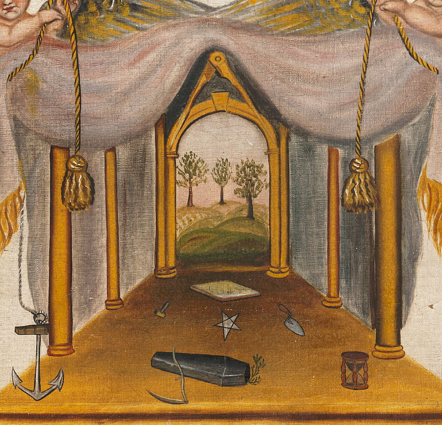
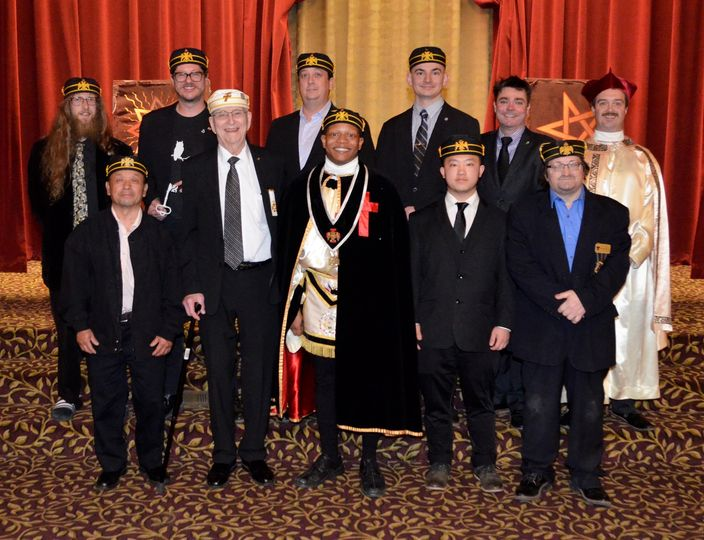

- What is a Freemason?

"Freemasonry is one of the oldest fraternal organizations in the world." -Grand Lodge of Ohio, est. 1808
The United Grand Lodge of England reports that worldwide membership totals more than 6 million Freemasons, 1.1 million of whom are in North America. With 68,000 Masons and 440 local Lodges, Ohio has one of the largest Masonic memberships of any state in the country. Reference>>
 - Where did they come from?
The earliest masonic texts each contain some sort of a history of the craft of masonry. The oldest known work of this type, The Halliwell Manuscript, also known as Regius Poem, dates from between 1390 and 1425. This document has a brief history in its introduction, stating that the "craft of masonry" began with Euclid in Egypt, and came to England in the reign of King Athelstan (924–939). Reference>>
 - Why are they still around?
The basic, local organisational unit of Freemasonry is the Lodge. These private Lodges are usually supervised at the regional level (usually coterminous with a state, province, or national border) by a Grand Lodge or Grand Orient. There is no international, worldwide Grand Lodge that supervises all of Freemasonry; each Grand Lodge is independent, and they do not necessarily recognise each other as being legitimate. Reference>>
- Do they control the world?
There are Masonic conspiracy theories dealing with every aspect of society. The majority of these theories are based on one or more of the following assumptions:
That Freemasonry is its own religion, requires belief in a unique Masonic god, and that belief in this Masonic god is contrary to the teachings of various mainstream religions (although usually noted in terms of being specifically contrary to Christian belief)
That the 33rd degree of the Scottish Rite is more than an honorary degree, coupled with the belief that most Freemasons are unaware of hidden or secretive ruling bodies within their organization that govern them, conduct occult ritual, or control various positions of governmental power.
That there is a centralized worldwide body that controls all Masonic Grand Lodges, and thus, all of Freemasonry worldwide acts in a unified manner.
All of these are undeniably untrue. A Mason is someone who has chosen to take a self journey, and learn to improve themselves through Masonry.
These Masons are multi-war Veterans, some are simply people who love and want to serve their community in anyway. From St. Judes, to your local lodge. The only control they have over, is themselves.
But, no Mason stands alone. Neither in the dark nor The Light. Reference>> - Ask your personal questions here!